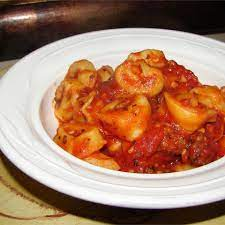

Equipmet: kettle, large mixing bowl, large mixing spoon (wooden), 4 cup glass measuring cup, plastic wrap, dish
Steps
Put water in a kettle and turn on to heat up.
Put 4 cups of flour and all other dry ingredients into a very large bowl and stir to combine.
Pour oil and milk into large glass measuring cup. If you don't have a large measuring cup, combine ingredients in a large bowl
Start adding the 3 cups of hot water. When you only have about half a cup left, feel the water and keep stirring and feeling the mixed liquids as you add the water. If it's too hot, add a little cold water. If it's too cold add more of the hot water. It should be hot enough that you feel a reaction sticking in your finger, but not enough that you want to pull your finger out.
Mix the liquids into the flour with a large spoon. I wuse a wooden spoon.
Pour remaining flour into the bowl, stirring as you go along. When it's too hard to stir, add flour onto your spoon and scrape it clean. Start kneading.
Stop adding flour or add more flour to get a consistency where it's no longer sticking to your fingers
Knead about 10 minutes. You can't overknead when doing it by hand. You lift the bread onto it's end, pour oil-milk mixture onto it.
Stop when it is satiny and it springs back right away when you press on it.
Pour oil around the edge of the bowl. Spin the dough around in the oil to cover the dough and the bowl with oil.
Cover the bowl with plastic wrap and then a towel.
If you are in a hurry, put it in a warm place.
After it has doubled in size, punch it down and form it how you'd like to cook it: loaf, bread sticks, rolls, etc.
Let it rise another 40 minuets before baking at 400 degrees in the oven for 20 minutes.
Tortellinis
Cream Cheese Tortellini with Red Sauce

Ingredients
Kosher Salt (for water)
1.5 c. milk
8 oz. cream cheese
0.5 c. of grated Parmesan (plus more for serving)
12-ish oz. of Marinara
1 c. diced ham
coarsely ground Black Pepper however much is desired
2 c. thawed frozen peas
18 oz. cheese tortellini
Equipment: Large pot, whisk, serving spoon, sauce pan
Enough water to fill a large pot for tortellini
Steps
To start bring large pot of salted water to boil
Add pasta to boiling water and cook acording to package
When pasta is done, drain it and keep it warm
While the pasta is cooking, start the sauce
To start the sauce, bring the milk, cream cheese, and parmesan to a simer in a large saucpan
Whisk vigorously until cream cheese is dissolved and sauce is thickened, this takes about 5 mins.
Season with 0.5 teaspoon salt, and a couple turns of pepper
Stir in the peas, and remove from heat for a little bit, add the ham
Add the marinara
Add pasta to sauce and toss, season with desired salt, pepper, and parmesan